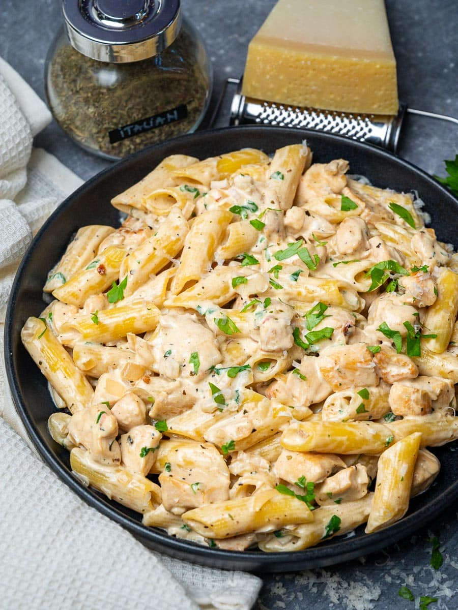

Home
Creamy Chicken Pasta

30 Minute Favorite: Creamy Chicken Pasta
This creamy garlic chicken pasta is comfort food at its best! Loaded with tender bits
of chicken and a heavenly creamy sauce made with loads of garlic and freshly grated Parmesan,
this pasta dish is a proper treat and is ready in just 25 minutes!
Ingredients
- 10.5 oz (300 g) pasta
- 1 tablespoon olive oil
- 1 tablespoon (20 g) unsalted butter
- 1 lb (450 g) chicken breast, cut into 1-inch pieces
- 4 garlic cloves, minced
- ½ tablespoon Italian seasoning
- ⅓ cup (75 ml) dry white wine
- 1 cup (200 ml) heavy cream (double cream)
- ½ cup (50 g) Parmesan, grated
- A handful fresh parsley, chopped
- salt and pepper(to taste)
Steps:
- Bring a large pot of pasta to a boil, salt it and cook the
pasta according to package directions.
Reserve a couple of cups of pasta water before draining.
-
Meanwhile, heat the olive oil in a large pan or heavy-bottomed
pot and melt the butter in it. Add the chicken breast and
cook for 5-6 minutes over medium heat or until cooked to your liking.
-
Add in the garlic and cook for 1 minute.
-
Next, stir in the Italian seasoning, then deglaze the pot with
the dry white wine and cook for 1-2 minutes until the alcohol
evaporates.
-
Stir in the cream and cook for 1-2 minutes or until the sauce
thickens, then add the cooked pasta and toss well to cover in sauce.
Add a splash of the reserved pasta water if it looks too thick.
-
Add the grated Parmesan and fresh parsley, stir to combine, then
season to taste and serve immediately.